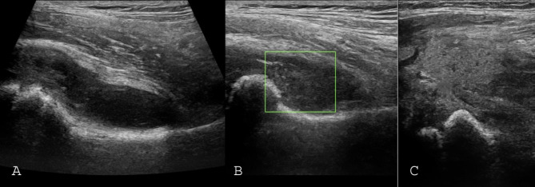

Ficha del catálogo
Artritis séptica
- Sistema
- Óseo
- Modalidad
- US
- Región
- Articulaciones grandes
- Dificultad
- Avanzado
Infección del espacio articular que constituye una urgencia porque el cartílago puede destruirse en pocos días. Afecta con más frecuencia la rodilla y la cadera, y en niños pequeños la cadera es la localización crítica por el riesgo de necrosis de la cabeza femoral. El diagnóstico definitivo es la artrocentesis, pero la imagen guía la punción y descarta alternativas.
Técnica
Ultrasonido articular con sonda lineal o convexa según la profundidad, comparando siempre con la articulación contralateral. Sirve además para guiar la aspiración diagnóstica.
Qué observar
- Derrame articular con contenido ecogénico o con detritus en suspensión
- Engrosamiento e hiperemia sinovial en el estudio Doppler
- Distensión de la cápsula con separación respecto al cuello femoral en la cadera
- Ausencia de erosiones en fases precoces y aparición rápida de pinzamiento después
- Colecciones de partes blandas periarticulares asociadas
- Comparación sistemática con el lado sano para valorar asimetrías sutiles
Hallazgos
Derrame articular con material ecogénico, sinovial engrosada e hiperémica y edema de partes blandas circundantes, sin cambios óseos en las primeras horas.
Perlas
El ultrasonido detecta derrame con gran sensibilidad pero no distingue por sí solo pus de líquido inflamatorio estéril. Ante sospecha clínica el paso siguiente es siempre la artrocentesis, no repetir imágenes.
Diagnóstico diferencial
- Sinovitis transitoria de cadera
- Niño afebril, reactantes normales y resolución espontánea en días.
- Artritis inflamatoria
- Afectación poliarticular simétrica y curso subagudo.
- Hemartros
- Antecedente traumático o coagulopatía y nivel líquido característico.
Simuladores
- Bursitis periarticular
- Celulitis profunda sin afectación articular
- Derrame reactivo a osteomielitis adyacente
Por modalidad
- US
- Detecta y cuantifica el derrame y guía la punción
- RM
- Valora osteomielitis asociada y abscesos profundos
- RX
- Descarta cuerpos extraños y muestra la destrucción articular tardía
Protocolo
Exploración ecográfica comparativa en planos longitudinal y transversal, con Doppler color de baja velocidad. Punción guiada si se confirma derrame.
Clasificación
Errores frecuentes
- Retrasar la punción por esperar hallazgos radiográficos
- Interpretar un derrame simple como prueba de infección
- No comparar con la articulación contralateral en el paciente pediátrico

artritis septica derrame articular cadera sinovitis urgencia artrocentesis pediatria